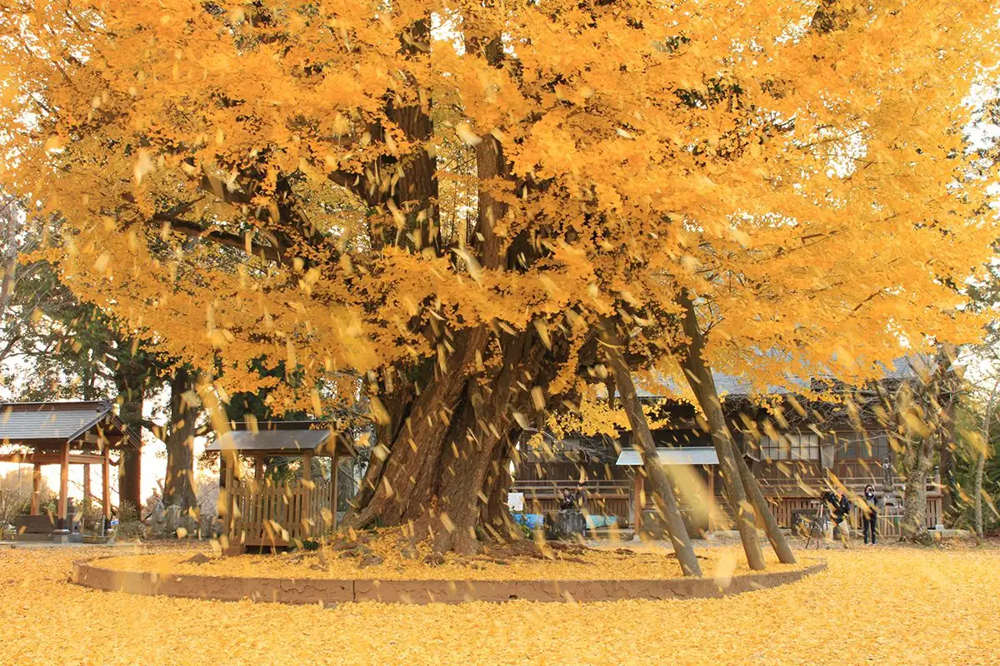
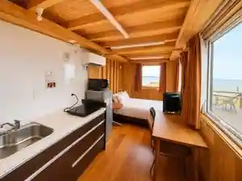
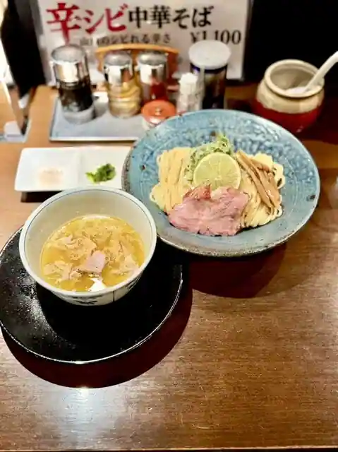

Japan / Ibaraki / Namegata
Namegata · Ibaraki
Namegata
Highlighted on the Ibaraki map.

Namegata City Hall


Sights · Things to do · Places to eat · Places to stay · Day-to-day services
Nearby in Ibaraki: ← Nakashi · Oarai →
Other towns: Amimachi · Bando · Chikusei · Daigomachi · Goka · Hitachi · Hitachinaka · Hitachiomiya · Hitachiota · Hokota · Ibarakimachi · Inashiki · Ishioka · Itako · Joso · Kamisu · Kasama · Kashimashi · Kasumigaura · Kawachimachi · Kitaibaraki · Kogashi · Mihomura · Mito · Moriya · Nakashi · Oarai · Omitama · Ryugasaki · Sakaimachi · Sakuragawa · Shimotsuma · Shirosato · Takahagi · Tokaimura · Tonemachi · Toride · Tsuchiura · Tsukuba · Tsukubamirai · Ushiku · Yachiyomachi · Yuki
All towns in Ibaraki · Back to all prefectures